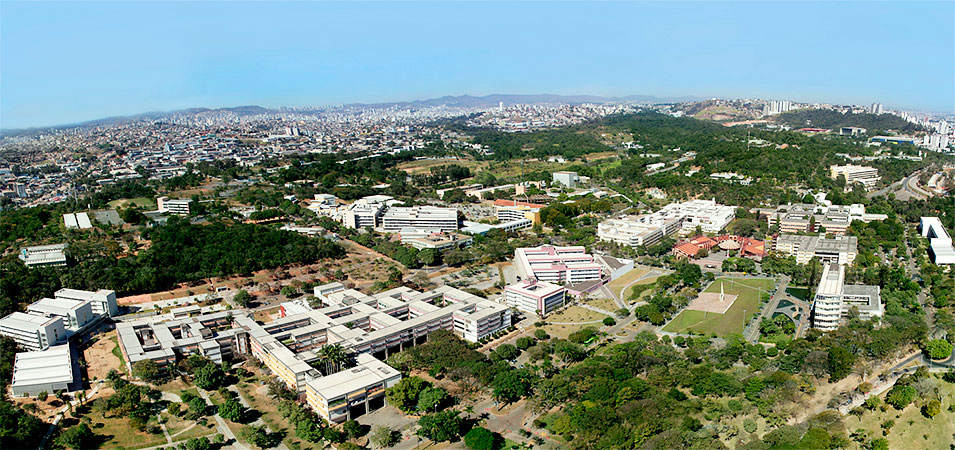
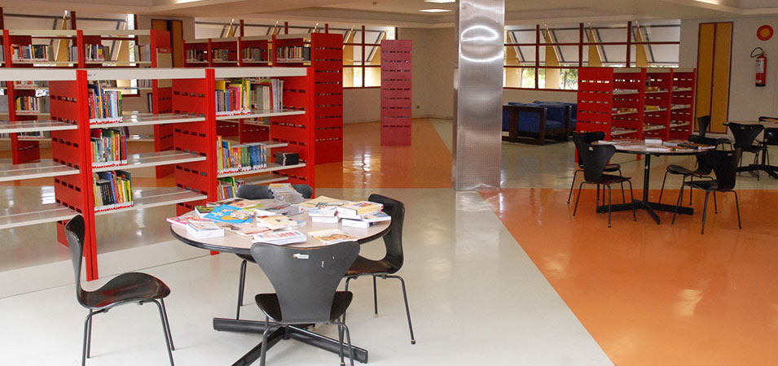
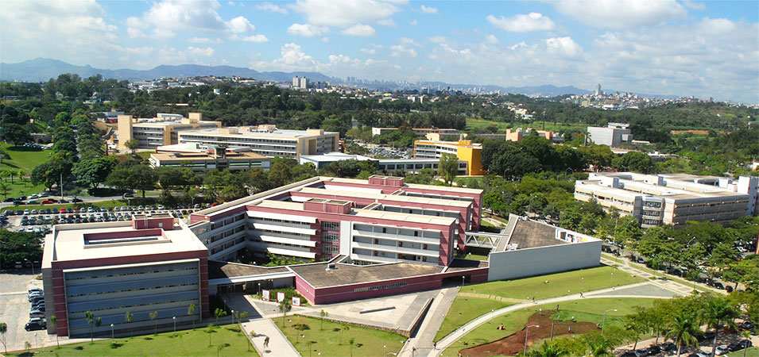

Sobre a UFMG





Em Minas Gerais, a primeira instituição de nível superior – a Escola de Farmácia, de Ouro Preto – data de 1839. Em 1875 é criada a Escola de Minas e, em 1892, já no período republicano, a antiga capital do Estado ganha também a Faculdade de Direito.
Em 1898, com a mudança da capital, a Faculdade de Direito é transferida para Belo Horizonte. Depois, em 1907, criou-se a Escola Livre de Odontologia. Em 1911, são criadas a Faculdade de Medicina e a Escola de Engenharia. Ainda em 1911, surge o curso de Farmácia, anexo à Escola Livre de Odontologia.
A criação de uma universidade no Estado já fazia parte do projeto político dos Inconfidentes. A ideia, porém, só veio a concretizar-se em 1927, com a fundação da Universidade de Minas Gerais (UMG), instituição privada, subsidiada pelo Estado, surgida a partir da união das quatro escolas de nível superior então existentes em Belo Horizonte. A UMG permaneceu na esfera estadual até 1949, quando foi federalizada. Ainda na década de 40, foi incorporada ao patrimônio territorial da Universidade uma extensa área, na região da Pampulha, para a construção da Cidade Universitária. Os primeiros prédios erguidos onde é hoje o campus Pampulha foram o do Instituto de Mecânica (atual Colégio Técnico) e o da Reitoria. O campus só começou a ser efetivamente ocupado pela comunidade universitária nos anos 60, com o início da construção dos prédios que hoje abrigam a maioria das unidades acadêmicas.
O nome atual – Universidade Federal de Minas Gerais (UFMG) – só foi adotado em 1965.
À época da federalização, já estavam integradas à UFMG a Escola de Arquitetura e as faculdades de Filosofia e de Ciências Econômicas. Depois, como parte de sua expansão e diversificação, a Universidade incorporou e criou novas unidades e cursos. Surgiram então, sucessivamente, a Escola de Enfermagem (1950), a Escola de Veterinária (1961), o Conservatório Mineiro de Música (1962) e as escolas de Biblioteconomia (1962), Belas-Artes (1963) e Educação Física (1969).
Em 1968, a Reforma Universitária impôs profunda alteração à estrutura orgânica da UFMG. Desta reforma resultou o desdobramento da antiga Faculdade de Filosofia em várias faculdades e institutos. Surgiram, assim, a atual Faculdade de Filosofia e Ciências Humanas, o Instituto de Ciências Biológicas, o Instituto de Ciências Exatas e seus respectivos ciclos básicos, o Instituto de Geociências e as faculdades de Letras e de Educação. Escolas Profissionais, como a Escola de Engenharia e Faculdades de Medicina, Farmácia e Odontologia, cederam também seus professores, bibliotecas e laboratórios de áreas disciplinas básicas para o ICex e ICB.
Hoje, firmemente estabelecida como instituição de referência para o resto do país, a UFMG continua em franca expansão, ocupando posição de muito destaque no conjunto das IES brasileiras, conforme mostra o vídeo abaixo.